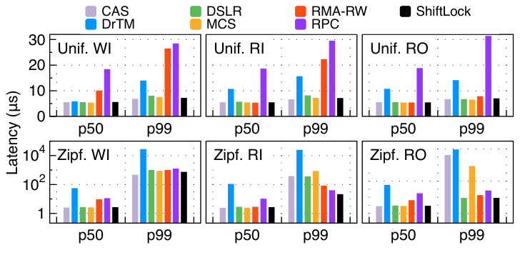
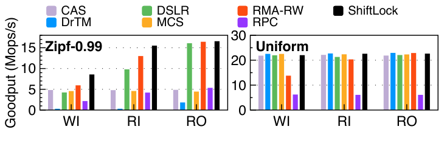

阅读正式论文设计、恢复、实验与讨论；检查作者仓库 README 和 MIT 许可证，未运行实验或观看报告。
为什么值得存储研发关注
热点元数据锁的问题不是 CAS 单次延迟，而是失败重试把同一个 RNIC 的入站处理能力耗尽。ShiftLock 把竞争者组织成分布式队列，让前驱直接通知后继，避免每个等待者反复访问锁服务器。它优化的是共享读写锁协议，不是事务提交或数据持久化。
机制：把重试改成交接，但不能丢掉读写公平性
16 字节锁包含 40 位队尾、23 位读者计数、1 位 epoch 与 64 位释放计数。写者通过扩展 CAS 模拟 FetchAndStore，一次交换队尾并形成 MCS 式队列；不使用普通 CAS 重试循环，否则排队本身又会制造竞争。每客户端一组 DC Initiator / DC Target QP，队尾编码节点号与 DCT QPN，避免全连接 RC 带来的平方级连接状态。
读者原子增加计数，没有写者队尾即可进入。写者入队时记录已有读者和释放计数，只等待它之前的读者完成，不能把后续到来的读者也无限计入等待。写者存在时新读者停下；连续交接 N 次写锁后翻转 epoch，让已经等待的一批读者进入，再通过 ModeChanged 消息把释放阈值交给下一写者。本文取 N=16，目标是限制读写双方饥饿，不是始终让吞吐最高。
队列交接通过预先投递的接收缓冲与可靠消息完成，不需要锁服务器 CPU 在正常路径处理 RPC，也不要求每个客户端另起轮询线程。客户端在释放等协议动作中处理通知，硬件 ACK 保障消息交付。代价是依赖 DC 传输和 128 位扩展原子操作；作者实现面向 Mellanox/InfiniBand，不能直接承诺任意 RoCE/RNIC 可运行。
失败窗口：租约恢复的是锁，不是业务数据
实验租约 10ms。释放计数连续三个租约不变时，客户端向服务器发起恢复 RPC；服务器检查 era、增加 era，并用扩展 CAS 重置锁、给释放计数增加 2^63，使等待者识别恢复并重新排队。旧 era 的恢复请求被拒绝，避免延迟恢复消息破坏已经重新使用的锁。方案使用有界时钟速率偏差和 RNIC 接收时间戳，不等同于要求全局精确时钟同步。
临界区必须在租约内完成。挂起的持锁进程、半完成元数据修改、锁服务器失效后的事务恢复仍需上层处理。论文故障实验按每次获取概率 10^-5 至 10^-2 跳过释放，不是任意网络分区或整机断电证明；其恢复检测较慢、失败接收者触发的 DCI 重置，也使故障条件下 goodput 低于 DSLR。存储落地应另设 fencing/version 校验和修改回滚，不可把“锁重新可获取”当作“旧写者绝不会污染数据”。
实验：热点收益明确，低竞争并非全面占优
六台机器（一个锁服务器、五个客户端），ConnectX-5 100Gbps InfiniBand、QM8790、128GB DDR4-2400；最多 240 个客户端。微基准含 1000 万个锁，不执行真实临界区工作；读比例分别为 50%（WI）、95%（RI）、100%（RO），比较均匀访问与 Zipf 0.99。基线包含 CAS 退避、MCS、RMA-RW、DSLR、DrTM 和 RPC，节点内通信额外加 1μs 用于公平比较。
图4的热点 WI/RI 中，相对 MCS，ShiftLock goodput 分别提高至 1.65×/1.27×；相对 RMA-RW 为 3.62×/1.26×。图5显示尾延迟收益，作者在该微基准比较中报告 p99 最高降低 76.6%，不能解读为所有负载都降低该比例。均匀低竞争负载中，CAS、DSLR、MCS 与 ShiftLock 接近，额外协议不是免费收益。


图中两组分位数展示公平交接的尾部收益；作者报告的最高 76.6% p99 降幅只对应论文特定微基准比较，不能外推成所有操作延迟降幅。
Jian Gao, Qing Wang, Jiwu Shu · FAST 2025 · PDF 第9页 · 技术评论节选
原文与上下文 ↗

比较均匀与 Zipf 0.99，WI/RI/RO 分别为 50%/95%/100% 读；热点 WI/RI 相对 MCS 为 1.65×/1.27×，均匀场景收益有限。
Jian Gao, Qing Wang, Jiwu Shu · FAST 2025 · PDF 第9页 · 技术评论节选
原文与上下文 ↗因果证据来自图6：一次获取与释放平均约 2.01 次原子操作，WI/RI 额外 RDMA READ 分别仅 0.36/0.20 次；DSLR 在 WI 中需要 7.92 次 READ。消除轮询使 RNIC 资源真正留给有效交接。但 WI/RI 扩展到约 80/120 客户端后趋于饱和，RNIC 瓶颈并未消失。表4也给出反例：WI 下 CAS-B 写者平均获取延迟比 ShiftLock 低 12.7%，ShiftLock 的优势主要在读者（快 7.44×）。RI 中 16B 原子操作本身比 DSLR 的初始原子操作慢 2.29×，靠等待时间减少 91.6% 才补偿。
N 的敏感性测试说明公平性有吞吐成本：N=∞ 比 N=32 多 3.3% goodput，却使中位延迟恶化 36.5%。应用层 TATP/TPC-C 使用事务轨迹和 2.8μs/7μs 忙等模拟执行，不是完整数据库端到端性能，不能直接用其最高 2.85× 推算存储服务。另一个真实 Redis SmallBank 实验从 5560 到 36550 ops/s，但 RedLock 使用 IPoIB，传输差异也参与了收益。
可执行的迁移实验
适合先试热点 extent 映射、共享缓存目录、读多写少对象元数据，而非直接替换跨故障域事务锁。先用一个服务端和两个客户端检查并发语义，再扩大到论文规模；扫描读比例、Zipf、临界区时长和客户端数，同时采集入站 RNIC IOPS、失败原子次数、交接次数、读写各自 p50/p99。对比公平性一致的 CAS 退避与队列锁，避免用饥饿换吞吐。
故障测试应暂停持锁者超过租约、断开接收者、注入过期恢复请求，并校验业务版本是否防止旧写回；单列恢复耗时、DCI 重建和服务端恢复 CPU 成本。只有确认硬件扩展原子/DC 能力、租约长尾和 fencing 方案后，才值得进入实际存储数据路径。